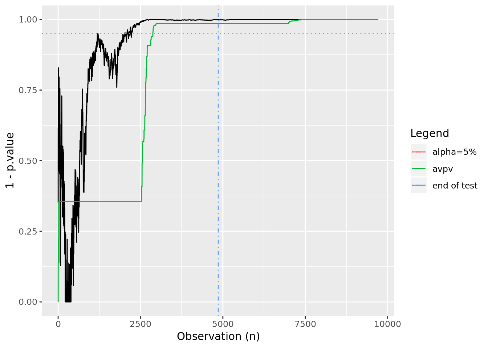
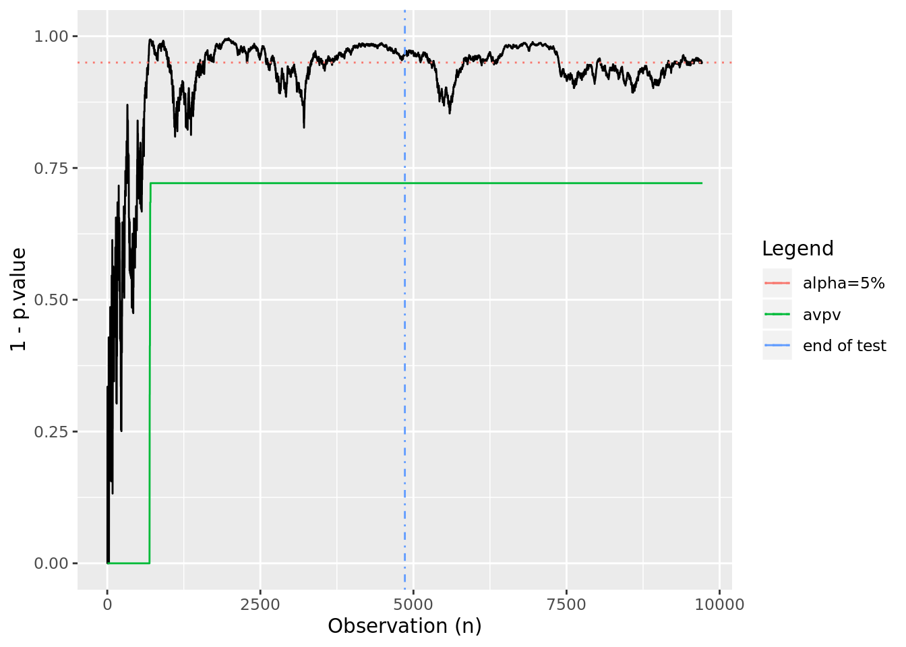
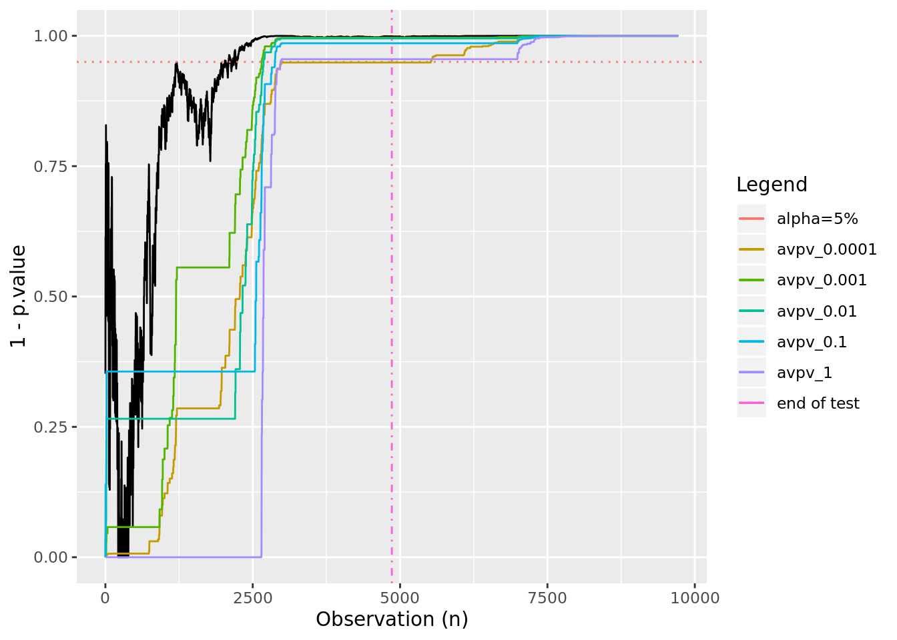

In a previous post we developed a framework for understanding Type-I and Type-II errors in A/B tests. We learned how to properly calculate the number of observations per group for the test to have a particular false-positive-rate and false-negative rate. We also learned that the correct time to measure the results of such a test is when exactly the calculated number of observations have been made: one time per experiment. Finally, we learned that a common problem plaguing A/B tests is peeking.
Peeking: visually or programatically deciding the result of an A/B test before the pre-calculated number of observations have been observed. Can lead to highly inflated false positive rates.
In this post, we will develop a framework for always-valid inference based on the paper Always Valid Inference: Continuous Monitoring of A/B Tests (2019 Johari, Pekelis, Walsh). Using an always-valid p-value allows us to continuously monitor A/B tests and potentially stop the test early in a valid way1.
In section 5 of the paper the authors propose their method for calculating always-valid p-values: the minimal sequential ratio probability test (mSPRT), first introduced by Robbins (1970). To keep this post brief, we will not do the paper’s theoretical foundations justice. Instead we will focus on the most important equations, which we will use to produce always valid p-values in our R-code. For those uninterested in the math, feel free to skip ahead.
The paper makes some basic assumptions on the data and its functional form: it is real valued and drawn from a single-parameter exponential family where tests are of the parameter \(\theta\). The mSPRT is parametrized by a mixing distribution \(H\) over \(\Theta\), an open interval that contains all \(\theta\). Given an observed sample average \(s_n\) at time \(n\), the mixture likelihood ratio of \(\theta\) against \(\theta_0\) with respect to H is defined as:
\(\Lambda_{n}^{H}(s_{n}) = \displaystyle\int_{\Theta}\bigg(\frac{f_{\theta}(s_{n})}{f_{\theta_{0}}(s_{n})}\bigg)^{n} dH(\theta)\)
We are told to calculate the p-values as:
\(p_{0} = 1; p_{n} = min\{p_{n-1}, 1/\Lambda_{n}^{H}\}\)
So, if we have a mixing distribution \(H(\theta)\) and integrate over it, we can calculate \(\Lambda_{n}^{H}(s_{n})\) for the sample average we have observed at time \(n\). If \(\Lambda_{n}^{H}\) is ever greater than \(\alpha\), our tolerance for the false positive rate, \(p_n\) will exceed \(alpha\) and we can stop the test and reject the null hypothesis.
We will implement this for a simple comparison of two binomial distributions first, where some convenient results make \(p_{n}\) easier to calculate. In section 6.1, the paper describes the deployment for two-stream p-values. In this case, we are looking at two streams of Bernoulli data: two streams of ones and zeros describing whether we observed a conversion or an abandonment in each stream.
The central limit theorem tells us that the distribution of the average number of conversions will be approximately normal after a large number of observations (say, more than 100). What we want to know is: is there a statistically significant difference between the measured averages of the two streams? Put another way: is the difference between the measured averages of the two streams significantly different from zero? It is this second formulation that we will implement.
We will skip the derivation for normal data and say that if we have two streams of Bernoulli data, \(A_n\) and \(B_n\), that each yield approximately normal average conversion rates \(\mu_{A,n}\) and \(\mu_{B,n}\) after \(n\) observations, we can take \(f_\theta(s_n) \approx N(\theta, \sigma^2)\) and use a normal mixing distribution \(H=N(0,\tau^2)\) in \(\Lambda_n^H\) to decide if \(\theta_n\) is significantly different from zero. Conveniently, this mixing distribution yields a closed-form formula for \(\Lambda_n^H\):
\(\Lambda_n^H = \sqrt{\frac{\sigma_n^2}{\sigma_n^2+n\tau^2}} exp\bigg\{\frac{n^2\tau^2(\theta_n)^2}{2\sigma_n^2(\sigma_n^2+n\tau^2)}\bigg\}\)
Let’s look at the variables in the above equation: We can calculate \(\theta_n = \mu_{A,n}-\mu_{B,n}\) from our streams of Bernoulli data by calculating the average conversion rates at \(n\) for each stream. We can also use the fact that the variance \(\nu\) of a binomial distribution with mean \(\mu\) is \(\nu = \mu(1-\mu)\) and that the variance of the sum of two random binomials is the sum of their variances:
\(\nu_{AB} = \nu_A + \nu_B = \mu_{A,n}(1-\mu_{A,n}) + \mu_{B,n}(1-\mu_{B,n}) = \sigma_n^2\).
One lingering issue is: how do we define \(\tau^2\)? The answer is we can choose any \(\tau^2\) we would like, though experience will show it is best if \(\tau^2\) is on the order of \(\sigma^2\). Later we will explore what different \(\tau^2\) values yield, and how there is an optimal \(\tau^2\) to choose.
Let’s convert the above into code:
# First we define the function that calculates lambda
# given n, the means at n of A and B, and tau_squared
lambda <- function(n, mu_a_n, mu_b_n, tau_sq){
v_n <- (mu_a_n*(1-mu_a_n) + mu_b_n*(1-mu_b_n))
nts <- n*tau_sq
if(v_n == 0){
return(1.0)
}
else {
return(
sqrt((v_n)/(v_n+nts))*
exp(
((n*nts)*(mu_a_n-mu_b_n)^2)/
((2.0*v_n)*(v_n+nts))
)
)
}
}
# Next we will calculate the always valid p-values at each n
calc_avpvs <- function(n_obs, cr_a_obs, cr_b_obs, tau_sq = 0.1){
p_n <- rep(1.0,n_obs)
for (i in 2:n_obs) {
mu_a_n <- mean(cr_a_obs[1:i])
mu_b_n <- mean(cr_b_obs[1:i])
p_n[[i]] <- min(p_n[[i-1]],1/lambda(i,mu_a_n, mu_b_n, tau_sq))
}
p_n
}
Now, let’s create a test example, similar to our previous post, and set an effect size that is twice the minimum detectable effect. In this case, we should expect that after having observed the “correct” number of observations given by the power calculation, there is a very high probability that we’ll see an effect.
library(pwr)
library(ggplot2)
set.seed(5)
mde <- 0.1 # minimum detectable effect
cr_a <- 0.25 # the expected conversion rate for group A
alpha <- 0.05 # the false positive rate
power <- 0.80 # 1-false negative rate
ptpt <- pwr.2p.test(h = ES.h(p1 = cr_a, p2 = (1+mde)*cr_a),
sig.level = alpha,
power = power
)
n_obs <- ceiling(ptpt$n)
# make our "true" effect 1.5x larger than the mde
# this should yield a conclusive test result
effect <- 1.5*mde
cr_b <- (1+effect)*cr_a
observations <- 2*n_obs
# two streams of {0,1} conversions
conversions_a <- rbinom(observations, 1, cr_a)
conversions_b <- rbinom(observations, 1, cr_b)
# now we'll calculate the always-valid p-values
avpvs <- calc_avpvs(observations, conversions_a, conversions_b)
# And we'll calculate "regular" p-values as well
tt <- sapply(10:observations, function(x){
t.test(conversions_a[1:x],conversions_b[1:x])$p.value
})
tt <- data.frame(p.value = unlist(tt))
# for plots
conf_95 <- data.frame( x = c(-Inf, Inf), y = 0.95 )
obs_limit_line <- data.frame( x = n_obs, y = c(-Inf, Inf) )
# plot the evolution of p-values and always-valid p-values
ggplot(tt, aes(x=seq_along(p.value), y=1-p.value)) +
geom_line() +
geom_line(aes(x, y, color="alpha=5%"), linetype=3, conf_95) +
geom_line(aes(x, y, color="end of test"), linetype=4, obs_limit_line) +
geom_line(data=data.frame(x=seq(1:observations),y=1-avpvs), aes(x=x,y=y, color="avpv")) +
xlab("Observation (n)") +
scale_color_discrete(name = "Legend") +
ylim(c(0,1))

In this case, we see that by using the always valid p-value we would be able to terminate early while still controlling the false positive rate at \(\alpha\). Let’s look at what happens when there is no effect:
effect <- 0
cr_b <- (1+effect)*cr_a
observations <- 2*n_obs
# two streams of {0,1} conversions
conversions_a <- rbinom(observations, 1, cr_a)
conversions_b <- rbinom(observations, 1, cr_b)
# now we'll calculate the always-valid p-values
avpvs <- calc_avpvs(observations, conversions_a, conversions_b)
# And we'll calculate "regular" p-values as well
tt <- sapply(10:observations, function(x){
t.test(conversions_a[1:x],conversions_b[1:x])$p.value
})
tt <- data.frame(p.value = unlist(tt))
# for plots
conf_95 <- data.frame( x = c(-Inf, Inf), y = 0.95 )
obs_limit_line <- data.frame( x = n_obs, y = c(-Inf, Inf) )
# plot the evolution of p-values and always-valid p-values
ggplot(tt, aes(x=seq_along(p.value), y=1-p.value)) +
geom_line() +
geom_line(aes(x, y, color="alpha=5%"), linetype=3, conf_95) +
geom_line(aes(x, y, color="end of test"), linetype=4, obs_limit_line) +
geom_line(data=data.frame(x=seq(1:observations),y=1-avpvs), aes(x=x,y=y, color="avpv")) +
xlab("Observation (n)") +
scale_color_discrete(name = "Legend") +
ylim(c(0,1))

In this case, we see a test in which the p-values oscillate near alpha. A “peeker” looking at this might have incorrectly called it a winner early on, however our always-valid p-values maintain the correct outcome.
Now set things up to have an effect 1.5 times the size of the minimum detectable effect and see what effect varying \(\tau^2\) has. We’ll choose 5 different values at different orders of magnitude between 0.0001 and 1:
library(pwr)
library(ggplot2)
set.seed(5)
mde <- 0.1 # minimum detectable effect
cr_a <- 0.25 # the expected conversion rate for group A
alpha <- 0.05 # the false positive rate
power <- 0.80 # 1-false negative rate
ptpt <- pwr.2p.test(h = ES.h(p1 = cr_a, p2 = (1+mde)*cr_a),
sig.level = alpha,
power = power
)
n_obs <- ceiling(ptpt$n)
n_obs
## [1] 4860
# make our "true" effect 1.5x larger than the mde
# this should yield a conclusive test result
effect <- 1.5*mde
cr_b <- (1+effect)*cr_a
observations <- 2*n_obs
# two streams of {0,1} conversions
conversions_a <- rbinom(observations, 1, cr_a)
conversions_b <- rbinom(observations, 1, cr_b)
# now we'll calculate the always-valid p-values
avpvs_tsa <- calc_avpvs(observations, conversions_a, conversions_b, tau_sq = 0.0001)
avpvs_tsb <- calc_avpvs(observations, conversions_a, conversions_b, tau_sq = 0.001)
avpvs_tsc <- calc_avpvs(observations, conversions_a, conversions_b, tau_sq = 0.01)
avpvs_tsd <- calc_avpvs(observations, conversions_a, conversions_b, tau_sq = 0.1)
avpvs_tse <- calc_avpvs(observations, conversions_a, conversions_b, tau_sq = 1)
# And we'll calculate "regular" p-values as well
tt <- sapply(10:observations, function(x){
t.test(conversions_a[1:x],conversions_b[1:x])$p.value
})
tt <- data.frame(p.value = unlist(tt))
# for plots
conf_95 <- data.frame( x = c(-Inf, Inf), y = 0.95 )
obs_limit_line <- data.frame( x = n_obs, y = c(-Inf, Inf) )
# plot the evolution of p-values and always-valid p-values
ggplot(tt, aes(x=seq_along(p.value), y=1-p.value)) +
geom_line() +
geom_line(aes(x, y, color="alpha=5%"), linetype=3, conf_95) +
geom_line(aes(x, y, color="end of test"), linetype=4, obs_limit_line) +
geom_line(data=data.frame(x=seq(1:observations),y=1-avpvs_tsa), aes(x=x,y=y, color="avpv_0.0001")) +
geom_line(data=data.frame(x=seq(1:observations),y=1-avpvs_tsb), aes(x=x,y=y, color="avpv_0.001")) +
geom_line(data=data.frame(x=seq(1:observations),y=1-avpvs_tsc), aes(x=x,y=y, color="avpv_0.01")) +
geom_line(data=data.frame(x=seq(1:observations),y=1-avpvs_tsd), aes(x=x,y=y, color="avpv_0.1")) +
geom_line(data=data.frame(x=seq(1:observations),y=1-avpvs_tse), aes(x=x,y=y, color="avpv_1")) +
xlab("Observation (n)") +
scale_color_discrete(name = "Legend") +
ylim(c(0,1))

It looks like we might be able to stop early if we use anything by the lowest and highest values for \(\tau^2\).
Using always-valid p-values, particularly for small or zero-sized effects, can be helpful in avoiding false positives. I’ve glossed over some important details that should be considered when working with non-normal data, but I hope this provides an introduction to an alternative way of evaluating binomial A/B tests. See Always Valid Inference: Continuous Monitoring of A/B Tests for more details.